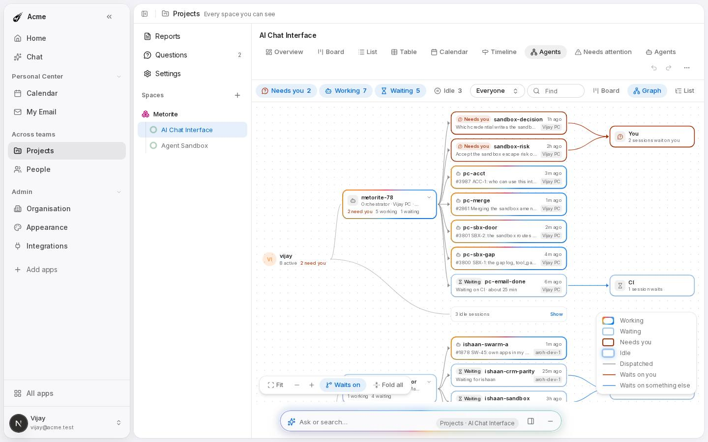
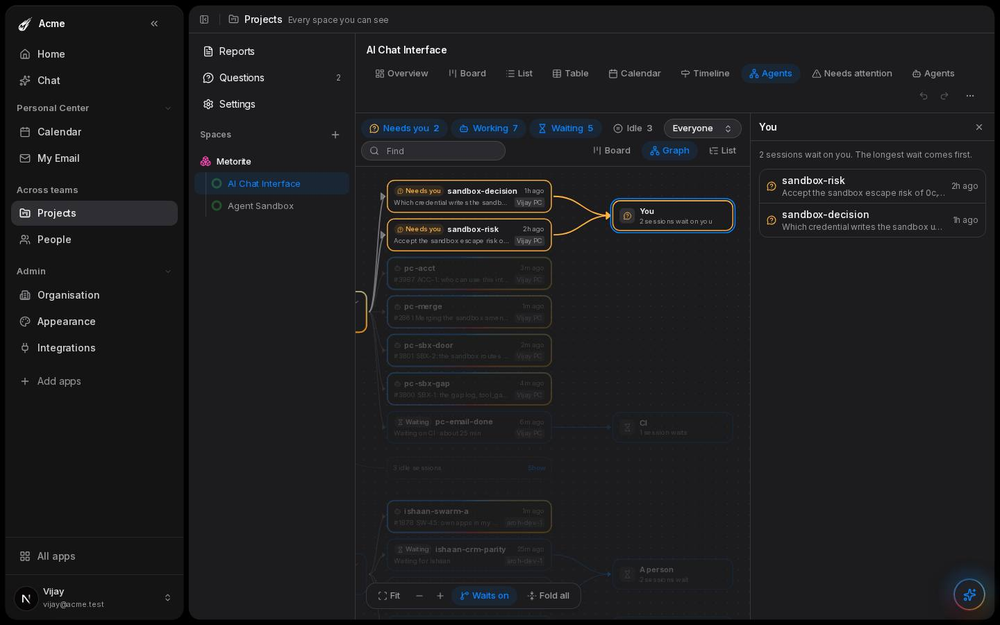
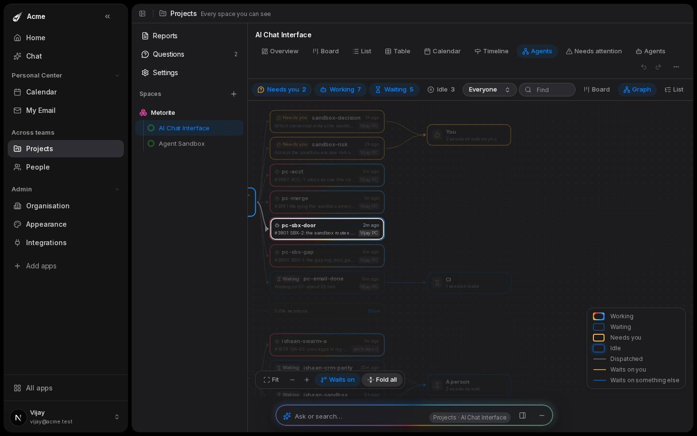
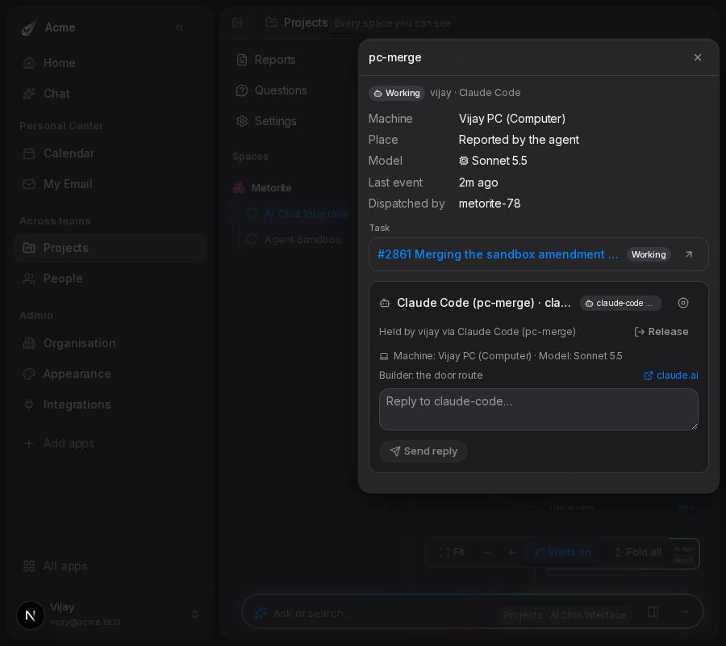
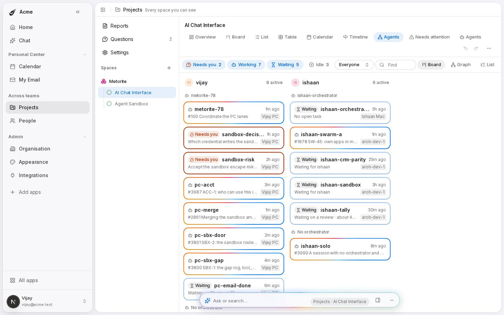
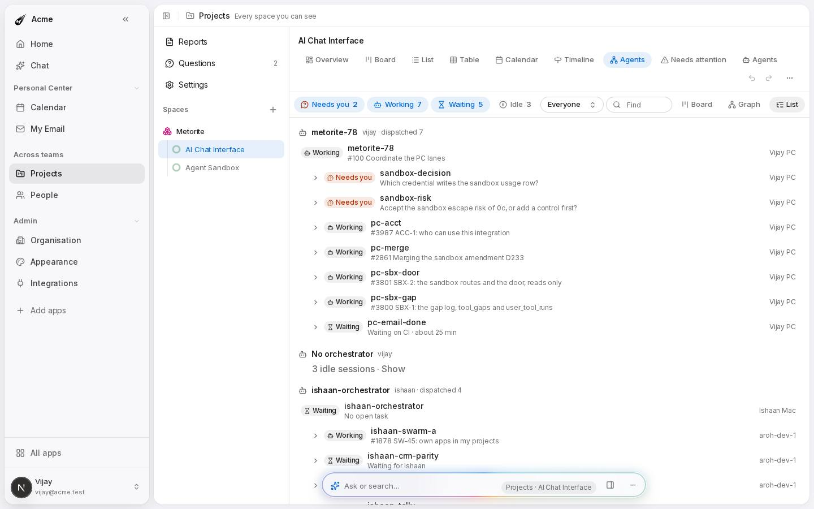
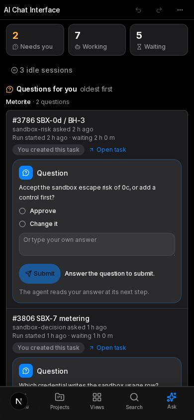
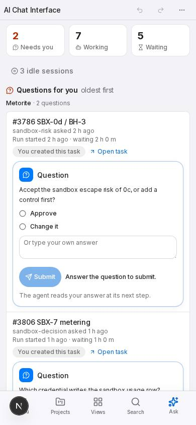
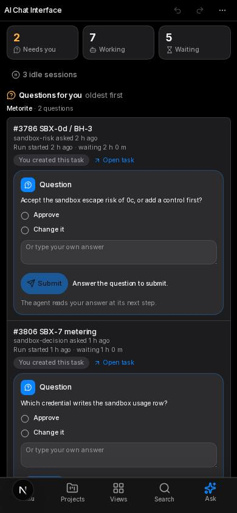

Captured on 2026-11-26 on the home box. The app runs the real code with fixture data in place of the API. The names and states are made up. The flag AGENT_LENSES_ORGS is off by default.
AMR-1 · The Graph lens, 1440 px
DarkLight

Compact densityChanged accent (violet)Hover lights a chainA session in the side dock, with the run panelThe dock, lightThe You node: the sessions that wait, longest first

Fold allKeyboard focus

Find: sbx1280 px900 px900 px: details in the shared dialog

AMR-2 · Board and List
Board, darkBoard, light

List, darkList, light

AMR-3 · Phone, 390 px
First screen: counts, then questions, oldest first

Light

Compact density

Changed accentThe end of the first screen: peopleA person